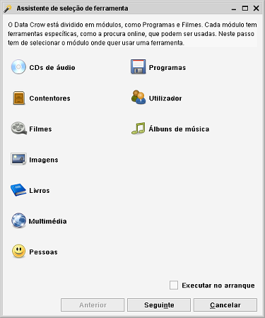
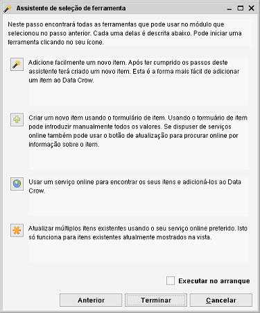

Assistente Selecionar ferramenta
Caminho de ficheiro: Ajuda > Assistente Selecionar ferramenta
Um assistente que o vai ajudar a selecionar a ferramenta certa para a tarefa.
Passo 1
No primeiro passo seleciona o módulo para o qual quer usar a ferramenta.

Passo 2
Mostra-lhe as ferramentas mais usadas para o módulo selecionado.
